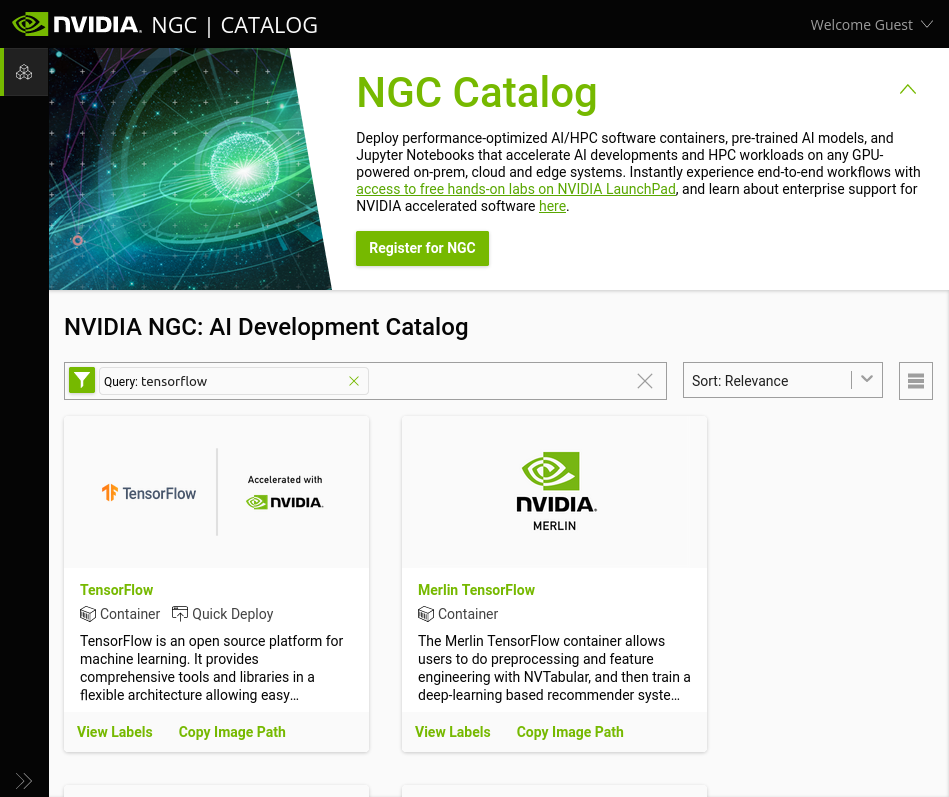
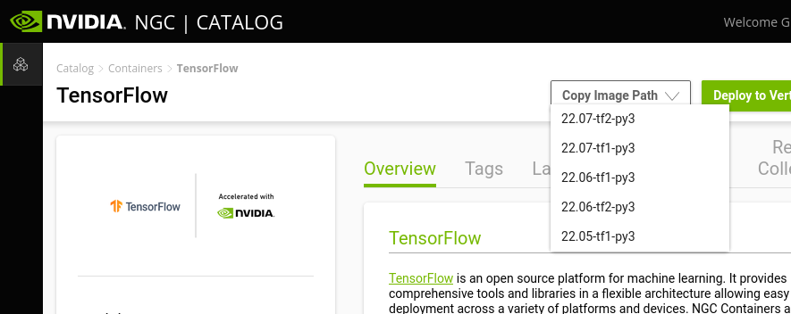

Introduction
This section describes how to get started with the AI Cloud at AAU.
We are many users on this system, so please consult the section on
Fair usage and follow the guidelines. We also have a
community
site
at AAU Yammer where users can share experiences and administrators
announce workshops, changes, and service to the system. If you have
support questions, please contact us at
support@its.aau.dk.
For new users, we recommend reading the front page and Overview section plus the section on Fair usage
Overview
The AI Cloud consists of the following compute nodes:
| Name | Nodes in total | GPUs per node | CPU cores per node | CPU HW threads | RAM per node | RAM per GPU | Disk | NVLINK / NVSWITCH | Primary usage |
|---|---|---|---|---|---|---|---|---|---|
| a256-t4-[01-03] | 3 | 6 (NVIDIA T4) | 32 (AMD EPYC) | 64 | 256 GB | 16 GB | None locally | No | Interactive / smaller single-GPU jobs |
| i256-a10-[06-10] | 5 | 4 (NVIDIA A10) | 32 (Intel Xeon) | 64 | 256 GB | 24 GB | None locally | No | Interactive / medium single-GPU jobs |
| a256-a40-[04-07] | 4 | 3 (NVIDIA A40) | 32 (AMD EPYC) | 32 | 256 GB | 48 GB | None locally | No | Large single-GPU jobs |
| i256-a40-[01-02] | 2 | 4 (NVIDIA A40) | 24 (Intel Xeon) | 24 | 256 GB | 48 GB | 6.4 TB /raid | Yes (2×2) | Large single-/multi-GPU jobs |
| nv-ai-[01-03] | 3 | 16 (NVIDIA V100) | 48 (Intel Xeon) | 96 | 1470 GB | 32 GB | 30 TB /raid | Yes | Large / batch / multi-GPU jobs |
| nv-ai-04 | 1 | 8 (NVIDIA A100) | 128 (AMD EPYC) | 256 | 980 GB | 40 GB | 14 TB /raid | Yes | Large / batch / multi-GPU jobs |
| a768-l40-[01-02] | 2 | 8 (NVIDIA L40) | 48 GB | Yes | Large / batch / multi-GPU jobs | ||||
| a512-mi100-01 | 1 | 8 (AMD MI100) | 32 GB | Yes (Infinity Fabric link) | Large / batch / multi-GPU jobs |
Important
The compute nodes nv-ai-04, i256-a40-01, and i256-a40-02 are owned
by specific research groups or centers which have first-priority
access to them. Other users can only access them on a limitied basis
where your jobs may be cancelled by higher-priority jobs. Users
outside the prioritised group can only use them via the "batch"
partition (use option --partition=batch for your jobs). See
Slurm jobs.
Getting started
An alternative workshop version introduction is also available, but this only applies to the AI Cloud pilot platform.
Logging in
You can access the platform using SSH. How to use SSH depends on which operating system you use on your local computer:
- Linux
- If you use a modern Linux distribution such as Ubuntu on your computer, the necessary tools to connect to AI Cloud are usually already installed by default.
- OS X (Apple)
- OS X has SSH built into the command line terminal. This means you
can invoke SSH commands as shown in the following examples directly
from your command line.
OS X does, however, not have a built-in X server so it is necessary to install additional software if you wish to be able to show the graphical user interface (GUI) of applications (using X forwarding).
Installing XQuartz should enable OS X to use X forwarding. - Windows (Microsoft)
- Newer versions of Windows have SSH built into the command line
terminal. This means you can invoke SSH commands as shown in the
following examples directly from your command line.
Windows does, however, not have a built-in X server either so it is necessary to install additional software if you wish to be able to show the graphical user interface (GUI) of applications (using X forwarding).
If you wish to use a convenient way to connect to the AI Cloud from Windows with the ability to display the GUI of applications you run in AI Cloud, we recommend that you install and use MobaXterm on your local computer.
The AI Cloud is only directly accessible when being on the AAU network (including VPN). You can connect to AI Cloud front-end node by running the following command on the command line of your local computer:
Example
ssh -l <aau email> ai-fe02.srv.aau.dk
Replace <aau email> with your AAU email address, e.g.
ssh -l tari@its.aau.dk ai-fe02.srv.aau.dk
If you wish to access while not being connected to the AAU network, you have two options: Use VPN or use AAU's SSH gateway.
Info
If you are often outside AAU, you can use the SSH gateway by default
through your personal SSH configuration (in Linux/OS X this is often
located in: $HOME/.ssh/config).
Host ai-fe02.srv.aau.dk
User <aau email>
ProxyJump %r@sshgw.aau.dk
Add the above configuration to your personal ssh config file (often
located in: $HOME/.ssh/config on Linux or OS X systems). Now you
can easily connect to the platform regardless of network using the
commands from preceding examples.
Transferring files
You can transfer files to/from AI Cloud using the command line utility
scp from your local computer (Linux and OS X). To AI Cloud:
Example
scp some-file <aau email>@ai-fe02.srv.aau.dk:~
where '~' means your user directory on AI Cloud. You can append directories below that to your destination:
Example
scp some-file <aau email>@ai-fe02.srv.aau.dk:~/some-dir/some-sub-dir/
You can also copy in the opposite direction, e.g. from the AI Cloud pilot platform to your local computer with:
Example
scp <aau email>@ai-fe02.srv.aau.dk:~/some-folder/some-subfolder/some-file .
where '.' means the current directory you are located in on your local computer.
In general, file transfer tools that can use SSH as protocol should work. A common choice is FileZilla or the Windows application WinSCP.
Running jobs
As mentioned on the Overview page, two important building blocks of the AI Cloud are the queue system Slurm and the container technology Singularity. In order to run a computation, analysis, simulation, training of a machine learning algorithm etc., it is necessary to first obtain a container to run your application in (in most cases) and to queue it as a job in the queue system (mandatory). The queue system is the only way to get access to running applications on the compute nodes.
Warning
The front-end nodes of the AI Cloud pilot platform and the AI Cloud are not meant for running computationally intensive applications. If you attempt to do so anyway, this risks rendering the entire AI Cloud inaccessible to you and all other users on it, because you exhaust the memory and/or CPU capacity of the front-end node. This is not considered acceptable use of the platform and is not allowed.
Slurm jobs
The first important building block to be aware of is the queue system Slurm.
Applications can only be run on the compute nodes through Slurm. You quite literally only have access to the compute nodes when you have a job allocated on them.
The simplest way to run a job via Slurm is to use the command srun.
Example
srun hostname
hostname as a job in the queue system. When
run like this with no further parameters specified, Slurm will run the
command on the first compute node available.On the AI Cloud pilot platform, this will either be nv-ai-01.srv.aau.dk or nv-ai-03.srv.aau.dk. On the AI Cloud, it will be a256-t4-01.srv.aau.dk, a256-t4-02.srv.aau.dk, or a256-t4-03.srv.aau.dk.
The command will return one of these host names. If the command displays "srun: job XXXXXX queued and waiting for resources", this means that all compute nodes are fully occupied (by other users' jobs) and your job is waiting in queue to be executed when resources become available.
This was your first Slurm job. You will need this (srun) and other
Slurm commands for most of your work in AI Cloud. You will see more
examples in combination with Singularity in the next section. Further
details about Slurm can be found on the Running jobs
page. The Danish e-infrastructure Cooperation (Deic) also hosts a great
e-learning course that might be helpful.
Singularity containers
Only a small set of typical Linux command line tools are installed on the compute nodes and can be run without a container. For all other applications, you must first obtain a container to run your applications in. The container provides an encapsulated software environment with your application(s) installed inside.
Obtaining containers
The recommended way to obtain containers is to first visit NVIDIA GPU Cloud (NGC) and check whether NVIDIA already provides a container with the application you need.

As an example, this could be TensorFlow. You can search on NGC and find TensorFlow. Here you can choose the desired version from the "Copy image path" dropdown menu:

This copies a link to the container which we will use shortly to download it.
We need to use Singularity to download the image and in order to run Singularity, we must run it the Slurm queue system. This results in the following command:
Example
srun --mem 32G singularity pull docker://nvcr.io/nvidia/tensorflow:22.07-tf2-py3
The above example consists of three parts:
srun: the Slurm command which gets the following command executed on a compute node.mem: a Slurm command that allows you allocate memory to your process. A higher amount of memory than the default is needed specifically for this TensorFlow container. Please see the Containers page for a better way to avoid excessive memory requirements.singularity pull: the Singularity command which downloads a specified container.docker://nvcr.io/nvidia/tensorflow:22.07-tf2-py3: this part of the command itself consists of two parts.docker://tells Singularity that we are downloading a Docker container and Singularity automatically converts this to a Singularity container upon download.nvcr.io/nvidia/tensorflow:22.07-tf2-py3is container label copied from the NGC webpage which identifies the particular container and version that we want. This part can be pasted into the command line by pressing<CTRL>+<SHIFT>+Vin the AI Cloud command line.
Once the singularity pull command has completed, you should have a
file called "tensorflow_22.07-tf2-py3.sif" in your user directory (use
the command ls to see the files in your current directory).
Running applications in containers
Now that you have a container image in your user directory (the file "tensorflow_22.07-tf2-py3.sif"), we can run the container. This can be done in several ways:
- Shell
- You can open a shell in the container. This basically gives you a
command line in the runtime environment inside the container where
you can work interactively, i.e. type commands in the command line
to run scripts and open applications.
This is good for experimenting with how you wish to run your computations, analyses etc. in the container.
Example
srun --pty singularity shell tensorflow_22.07-tf2-py3.sif
The --pty parameter is necessary in order to enable typing commands
into the command line in the job. After opening the shell in the
container, your command line terminal should display:
Singularity>
This means that it is ready for you to type in commands. Type exit
and hit ENTER to exit the container and stop the running job.
- Exec
- Execute a specified command (such as running a script) in a
container.
This is useful if you know exactly which command you wish to run in your container.
Example
srun singularity exec tensorflow_22.07-tf2-py3.sif hostname
Notice here that the --pty option is not necessary if the executed
command does not need keyboard input while running. Here we use
hostname as a toy example of a command that prints out a simple
piece of information and then exits.
- Run
- Run the default action configured in the container.
The container determines what the default action is. This is useful if you have obtained a container constructed to carry out a specific task.
Example
srun --pty singularity run tensorflow_22.07-tf2-py3.sif
In some cases, the default action of a container is to open the shell.
This is why we use the --pty option here.
Allocating a GPU to your job
The primary role of the AI Cloud is to run software that utilises one or more GPUs for computations.
The final step we need here in order to run applications with a GPU is to actually allocate a GPU to a job using Slurm. The examples up to now have all run jobs without a GPU. It is necessary to explicitly ask Slurm for a GPU in order to be able to use one.
Example
You can allocate a GPU to a job by using the -G or --gres=gpu
option for Slurm
srun -G 1 nvidia-smi
This example allocates 1 GPU to a job running the command
nvidia-smi. This command prints information about the allocated
GPU and then exits.
The following commands achieve the same:
srun --gres=gpu nvidia-smi
srun --gres=gpu:1 nvidia-smi
Note that the above examples all allocate 1 GPU to the job. It is
possible to allocate more, for example -G 2 for two GPUs.
Software for computing on GPU is not necessarily able to utilise more than one GPU at a time. It is your responsibility to ensure that the software you run can indeed utilise as many GPUs as you allocate. It is not allowed to allocate more GPUs than your job can utilise.
Note that you can ask for a specific type of GPU if you need to, please see: Using a specific type of GPU.
In most cases you probably want to use a GPU in combination with a Singularity container. In this case, we also need to remember to enable support for NVIDIA GPUs in Singularity:
Example
srun --gres=gpu:1 singularity exec --nv tensorflow_22.07-tf2-py3.sif nvidia-smi
The --nv option enables NVIDIA GPUs in the container and must always
be used when running jobs that utilise GPU(s). Otherwise, the GPU(s)
will not be available inside the container.
These were a few of the most basic details to get started using the AI Cloud. Once you have familiarised yourself a bit with the AI Cloud, we suggest you have a closer looking at the pages here with details on Slurm and Singularity for more details and features. The Additional examples page contains more detailed examples of concrete use cases for the AI Cloud.
Fair usage
The following guidelines are put in place to ensure fair usage of the system for all users. The following text might be updated from time to time in order to provide the best possible service for as many users as possible.
ITS/CLAAUDIA work from the following principles for fair usage:
- Good research is the success criterion and ITS/CLAAUDIA should lower the barrier for allowing this.
- Researchers should enter on a level playing field.
- ITS has an administrative and technical role and should in general not determine what research should have a higher priority. Students are vetted with recommendation of supervisor/staff backing that this is for research purposes.
- Aim at the most open and unrestricted access model.
Based on these principles we kindly ask that all users consider the following guidelines:
- Please be mindful of your allocations and refrain from allocating many resources without knowing/testing/verifying that you indeed can utilise all of the allocated resources.
- Please be mindful and de-allocate the resources when you are no longer using them. This enables other users to run their jobs.
If in doubt, you can run:
squeue --me
A few key points to remember:
- Please refrain from allocating jobs that sit idle in order to
"reserve" ressources for you. For example
srun --pty bash -lopens an interactive (command line) job that keeps running without doing anything unless you actively type in commands.
This is unacceptable practice and we will cancel such inactive jobs if we encounter them. - There are typically more resources available in the evenings/nights
and on weekends. If possible, start your job as a batch script
(
sbatch) and let it queue and rest while the computer does the work. Maybe even better, if the job is not urgent, queue the job to run late in the afternoon or use the-bor--beginoption with your batch script, e.g. add the line
#SBATCH --begin=18:00:00
ITS/CLAAUDIA will keep analysing and observing the usage of the system to make the best use of the available resources based on the above principles and guidelines. If ITS/CLAAUDIA is in doubt, we will contact users and ask if the resource allocations are in line with the above principles and guidelines. We will be more active in periods of high utilization.